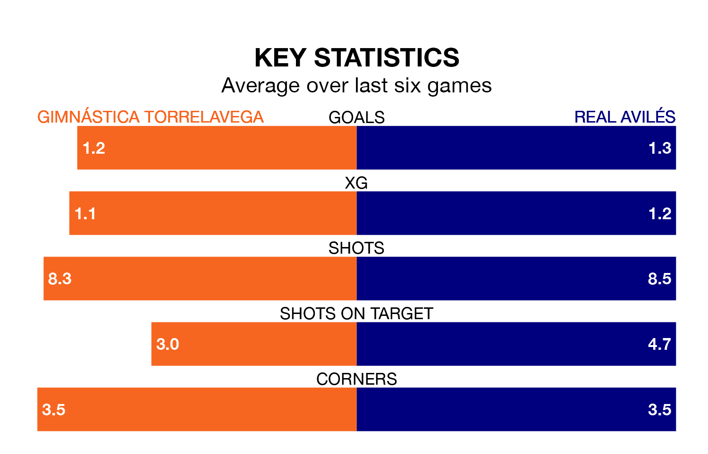

Gimnástica Torrelavega are on a poor run ahead of hosting Real Avilés at the Estadio El Malecón on Sunday, with just four points collected from their last six games.
Gimnástica Torrelavega have picked up one win and one draw in their last six Segunda División RFEF Group 1 games, and face an Avilés side whose last six games have brought four wins and two losses.
With 23 goals in 19 games so far this season, Gimnástica Torrelavega are scoring more than average in the league with 1.2 goals per game. But they are conceding more than average too, letting in 30 goals at a rate of 1.6 per game.
Avilés, meanwhile, are average scorers, with 1.1 goals per game. They have also conceded 1.1 goals per game.
The home team are 14th in the table after 19 games, of which they have won five and drawn four, earning 19 points.
The visitors are four places ahead of Gimnástica Torrelavega in 10th, with five wins and nine draws putting them on 24 points.
In the last three years, Gimnástica Torrelavega and Avilés have played each other on three occasions. They won one each, and they drew once.
Their last meeting was on September 16, when Gimnástica Torrelavega won 1-0 away.
Gimnástica Torrelavega's last match was on January 21, a 2-0 win against Real Oviedo B.
Avilés beat Villalbés 1-0 last time out, also on January 21.
Updated: 09:07 (UTC), 24/01/24